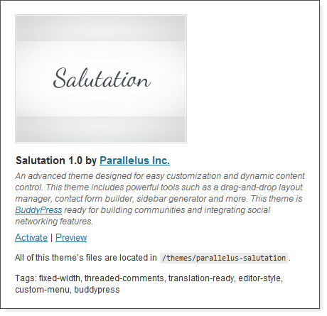
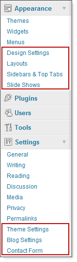
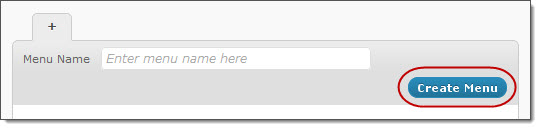
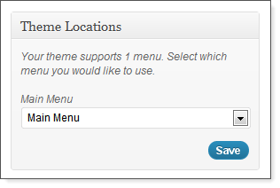
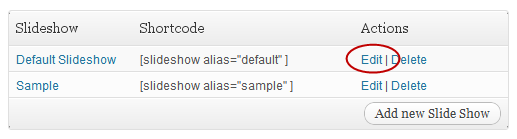
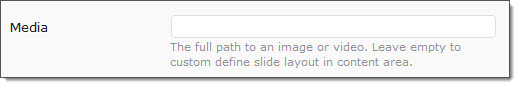
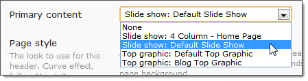
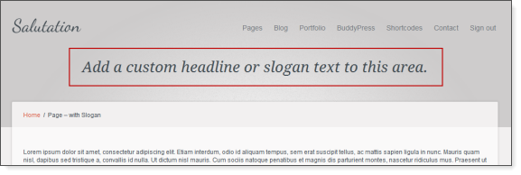
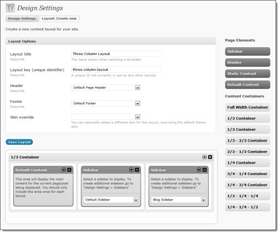
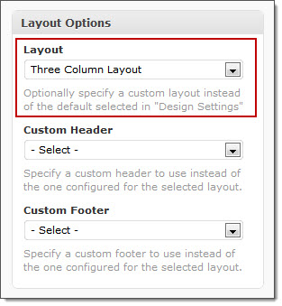

Created: September 16, 2011
By: Parallelus (Andy Wilkerson)
Thank you for purchasing this theme. We take great pride in creating useful web applications and are delighted that you have chosen one of our products for your website. Our hope is you can use the theme to take the hard work out of building a website allowing you to focus on more important things like growing your business. We hope you get as much enjoyment from using the theme as we did creating it.
Feedback and suggestions are always welcome. Please don't hesitate to leave comments or contact us for support on our Help Center. If you are happy with the theme please take a moment to rate it on the ThemeForest website.
Thank you,
Andy Wilkerson
For additional resources beyond this document we provide written and video tutorials as well as expert help from our Support Team. If you need assistance please let us know.
Video Tutorials
Includes topics such as: Installation and Setup, Theme Options and Design Settings, Menus and Page/Post Options, Blog Settings and Shortcodes and more.Written Tutorials
Customize and streamline your website with tips from the theme creators.
Parallelus Help Center
Get expert support from the Parallelus Support Team as well as our growing community of users. Search the forum, check the FAQs and post questions directly to the support staff.
This theme is designed for use with WordPress 3.0 or higher. The code was written to be backwards compatible where possible, however it is recommended you use version 3.1 or higher. If you are not using WordPress 3.1 or higher and you can upgrade your site we recommend you do this before installation.
Although every effort has been made to ensure the theme is bug free and easy to use there is always a chance of errors. If you do find a problem please notify us immediately by posting the problem to the Parallelus Help Center so we can ensure it is fixed as quickly as possible.
Installing the theme can be done two ways. You can upload the theme ZIP file using the built in WordPress theme upload, or copy the files through an FTP client.
1) Using WordPress Theme Upload
Be sure to extract the ThemeForest download before uploading. Inside you will find the ZIP file "theme-salutation.zip" which contains the theme files. Using the entire ThemeForest ZIP file directly will result in a "Missing Style Sheet" error.
- Login to your WordPress admin.
- In the "Appearance > Themes" menu click the tab "Install Themes"
- At the top of the page click, "Upload", then click the file input to select a file.
- Select the zipped theme file, "WordPress/theme-salutation.zip", and click "Install Now"
- After installation you will receive a success message confirming your new install.
- Click the link "Activate"
2) Uploading by FTP
- Login to your FTP server and navigate to your WordPress themes directory.
Normally this would be "wp-content/themes"- Extract the files from the zipped theme.
- Copy the folder "parallelus-salutation" to your themes directory.
- After the files finish uploading, login to your WordPress admin.
- In the "Appearance" menu click "Themes"
- Click "Activate" for the theme "Salutation"
The theme uses custom content called "Static Blocks" for some of it's structure. After you install the theme it is required to import the default content blocks. To do this, go to "Tools > Import" and select the option for "WordPress". If the importer isn't already installed it will prompt you to do so. After the importer is installed, select the required demo content file from the same folder used to uploaded the theme. Follow the directions on the screen to complete the install process.
Required demo content file: "WordPress/REQUIRED-import-static-blocks.xml"
Optional Data
A full demo content file is also included with this theme. You can optionally install it by following the same instructions as above for "Data Importing (Required)". After importing this data you will have all of the demo content which can be exported by WordPress.
Optional demo content file: "WordPress/OPTIONAL-import-full-demo-content.xml"
Once the theme is installed you can configure it for your content. See the sections below on configuring the theme to start adding your content.
This section provides a brief overview of the theme options, setup and configuration. It will help you get started quickly by providing a basic overview of the theme structure. Additional details can be found in later sections of this document.
There are several pre-made skins installed with the theme. You can activate any of these from your admin area: "Appearance > Design Settings". You can also add custom skins. There is more information custom skins in the "Skinning the Theme" section.
Install and Activate the Theme
If you don't know how to install WordPress themes, see the full "Installation" instructions above. Once the theme is installed, activate it from "Appearance > Themes" by clicking the "Activate" link for "Salutation".

Default Options
After activation several new menus will appear in your admin under the sections, "Appearance" and "Settings".
First, configure the following default Design Settings.
- Click "Appearance > Design Settings"
- Set the following options:
- Logo
- Skin (default: Skin 1)
- Heading font (defult: Open Sans)
- Body font (default: Arial)
You will find a number o other settings available in this area including the default sideber, background colors and custom CSS and JavaScript inputs. Use these as needed to customize the look and feel of your site.
Setting up Menus
To create a menu or attach an existing menu to the theme, go to "Appearance > Menus".

Attach the menu to the theme by setting the menu location.

Adding Content and Shortcodes
At this stage your website should be capable of displaying all of your content. The remaining sections of the quick start guide serve as an introduction to theme features and functionality.
Much of the theme related content is inserted using "shortcodes". A shortcode is a snippet of text inserted into the editor which produces a specific output. Shortcodes are formatted as [short_code_name] or sometimes [short_code]Some content[/short_code]
A full list shortcodes and their parameters is available here: Shortcode Documentation
Customize the Slide Show

From "Appearance > Slide shows", click the "Edit" link (or "Override" if shown) for "Default Slide Show". Open the slide show again and choose "Slide 1". Replace the image path in the "Media" input with your own image. You can get the path from your WordPress Media area by editing a file and copying the "File URL"

Next, override the "Home Page Header" in the layout page headers section. Change "Primary content" to "Slide show: Default Slide Show" then click "Save". You may find some of these settings are already configured as described.

Refreshing your home page should reveal the update.
More information about slide shows:
Slide Show Shortcode ParametersUsing Static Content Blocks
There is a custom post type called "Static Content" used to make content areas for the site. After installing the theme you should immediately import the default static blocks by following the directions in installation section of this document.
Static block content can be inserted into your Headers, Footers, Layouts and directly into other content using the shortcode: [static_content id="featured-products"]
When inserting a static content block with the shortcode, the ID should be the slug for that block. The slug is found just below the title field when editing and appears as the end of the URL path to the page: "mysite/featured-products/"
More information about top graphics: Static Content Blocks Usage
Top Banners

The top banners are a widget ready area of the headers. To set a top banner, go to "Appearance > Layouts > Headers" and select a header to edit. In the "Top banner" select box you can pick any custom sidebar created in the theme as the content source.
Footer Content
Footer content is created by selecting a static block as the content source. To set a static block go to "Appearance > Layouts > Footers" and select a static block from the "Primary content" drop down menu.
Customizing Layouts
You can create as many layouts as you need. For this example we will create a custom layout to serve as a three column page.
- Begin by clicking the "Add new layout" button at the bottom of the "Page Layouts" list.
- Enter the title "Three Column Layout"
- Enter the layout key "three-column-layout"
- Set the header to "Default Page Header"
- Set the footer to "Default Footer"
Next, you need to add layout containers into the page area. Drag the "1/3 Container" into the page area. For this example we only need this one container. Once the layout container is in place, drag content areas into the layout. First drag the "Default Content" content area into the first column. Next, drag the "Sidebar" and select "Default Sidebar". Last, drag another "Sidebar" into the third column and select a different sidebar. Save the layout when finished.

After creating the layout it can be used with any page or post. To test the layout open an existing page and select the new layout from the "Layout Options" box on the right side of the edit page.

Save the changes and view the page to see the new layout.
More layout information: Layout Manager
The theme options are broken into 2 areas: Theme Settings and Design Settings. This section covers the options under the Theme Settings area.
Theme Settings
(Settings > Theme Settings)
Various settings related to your site setup and functionality.
- Favorites Icon - A browser shortcut icon. This appears on tabs in your browser.
- Mobile Bookmark Icon - This icon is used by Android (v2.1+) and iPhones to display home screen bookmarks. Recommended image size 129 x 129, saved in PNG format.
- Append to Browser Title - Optional text appended to browser titlebar. Should start with separator, e.g., " - My Site Name". Note: This text will only appear on sub-pages and not the home page of your site.
- Placeholder Images - Show placeholder images for posts and portfolio items without images attached.
- Custom Placeholder Image - Add your own custom placeholder image.
- Error Page (404) - Select a page as the content source for your error page.
- Google Analytics - Add your Google Analytics tracking ID. For example: UA-XXXXX-X
Special Features
(Settings > Theme Settings > Special Features)The theme has optional settings for advanced functionality and effects. These can be configured as desired. Some options can be enabled/disabled for specific browsers that don't support advanced functionality. If you are having performance issues on your site you may be able to fix them by modifying these settings.
- Fade In Page Content - Page loading effect to show a brief fade transition as the page content appears. Not available for IE6-8.
- Tool tips - Allows your links to show tool tips based on reading the "title" filed of the link attributes. You can enable this universally, disable it or set it to only use items with the class "tip" giving you control to specify exactly where the tips should appear.
- There are some special micro-blogging features built into the tool tips. Any tip found on a link to a Twitter account will automatically pull the most recent tweet by that user and display it in the tool tip.
Developer Features
(Settings > Theme Settings > Developer Features)
These features are provided for developers to customize the theme options panels as needed. The entire developer options area can be hidden from the admin area by making a change in the theme file "functions.php". Set the variable: $developer_options = false;
These are advanced options for admin permissions and theme setup. After making changes to these settings it may require an additional refresh of the page before you see the changes.
- Custom Fields Manager - Create and edit custom page and post "meta" fields.
WARNING: This option is for advanced users only. Changes made using this tool are your responsibility. If you experience problems no support will be provided.
- Design Settings Permissions - Set the minimum access level required to access the theme options areas.
Branding and Admin
(Settings > Theme Settings > Developer Features)
Enable re-branding of theme options, help content, etc. After making changes to these settings it may require an additional refresh of the page before you see the changes. These features are also hidden by setting $developer_options = false; in the file "functions.php".
- Theme Options Logo - For branding the top right area of theme options pages.
- Theme Help Tab - The content of the "Theme Help" tab on the top right.
- Right container title - The title for an optional custom right column container for you to add your own information.
- Right container content - The content for an optional custom right column container for you to add your own information. HTML is allowed.
- Show theme settings - Do you want the default theme settings container to show in the right column?
- Show design settings - Do you want the default design settings container to show in the right column?
Blog Options
(Settings > Blog)
Configure the themes default design settings and options.
- Show author name - Include the author name in blog posts.
- Show author avatar - Include the author avatar image in blog post list.
- Show post date - Include the posted date in blog posts.
- Show comments link - Include the comment count and a link to the form in blog posts.
- Show categories - Include a list of categories for each post in its description.
- Show tags - Include a list of tags for each post in its description.
- Images on blog lists - Show featured image for each article in the blog list?
- Featured image on post - Show image for current post on the single post page.
- Post image width - The default post image width. This can also be set from the blog shortcode or in a single post.
- Post image height - The default post image height. This can also be set from the blog shortcode or in a single post.
- Use post excerpts - Show content excerpts on your blog pages. Selecting "No" will display the full post in your post list. Leave blank for images to auto size the height.
- Post excerpt length - The number of words in post excerpts, 250 max. Custom excerpts are not restricted by this setting.
- "Read more..." link - Optional link after post excerpts. Enter desired text for the link or for no link, leave blank or set to "-1".
Blog pages are added to the theme using the blog shortcode, [blog category="1,2,3"]. There are a number of ways to configure and customize the output of the blog page from the shortcode parameters. A full list of all blog page parameters and additional blog information can be found here:
Blog Shortcode ParametersContact Forms
(Settings > Contact Form)
Display your form with the [contact_form] shortcode. You can customize each instance with unique values for "to", "subject" and "thankyou" in the form. Empty fields use the default settings established in the fields below.
- Email To - The default address to deliver messages sent from contact forms.
- Subject - Enter the default email subject for contact form messages.
- Thank You Message - The "thank you" message visitors will see after sending.
- Button text - The text to appear on the send button. Default: "Send"
- Use CAPTCHA - Require CAPTCHA image verification?
A full list of contact form parameters and additional information can be found here:
Contact Form Shortcode ParametersContact Form Fields
You can create new fields to add to your contact form.
- Field title - The name of the field as it will be displayed in the form.
- Field key - This key is used to add the field to contact forms.
- Caption - You can add instructions or information for the user about this field. HTML code is allowed.
- Field type
- Text - A simple one line text input.
- Textarea - Plain text box for multiple lines of text.
- Select - A select list (drop down), using the names/values specified in the "Values" field below.
- Radio button (set) - A radio button set, where the user can select a single option. The list of values is specified below.
- Checkbox - Single checkbox.
- Hidden - A hidden field not seen by the user. Specify the value in the field below.
- Values - Set the value of hidden fields here or they will contain no information. If your selected field type requires pre-defined options, such as radio buttons or select boxes, enter the values here as a comma separated list. For example, your values could be entered as Good, Better, Best.
- Required - Require users to enter a value?
- Required error message - Enter an optional error message for empty fields that are required.
- Minimum length - You can optionally specify a minimum number of characters allowed for this field.
- Maximum length - You can optionally specify a maximum number of characters allowed for this field.
- Validation - You can apply validation to some fields to ensure valid entries.
- Validation error message - Enter an optional error message for fields that fail validation.
- Input width - Optional. You can specify the width of the field in pixels. Does not apply to some input types.
- Input height - Optional. You can specify the height of the field in pixels. Does not apply to some input types.
The theme options are broken into 2 areas: Settings and Appearance. This section covers the options under the Appearance area.
Design Settings
(Appearance > Design Settings)
Configure the themes default design settings and options.
- Logo - The full URL to your logo file.
- Skin - Default skin for the theme.
- Heading font - Default heading font.
- Body font - Select the default font for the page body.
- Other Defaults
- Sidebar - The default sidebar to use when not specified.
- Styles
- Custom CSS - Add custom CSS directly to the <head> section of the site. For example, you could change the color of your links to red by entering: a:link, a:visited { color: #C00; }
- Scripts
- Custom JavaScript - Add custom JavaScript directly to the <head> section of the site. For example, you could add an alert by entering: alert('Welcome!');
Layouts
(Appearance > Layouts)
Be sure to scroll to the bottom of the "Layouts" page to setup the defaults!!!
Along with creating / editing Headers, Footers and Layouts, the following options are set here:.
- Default Layout Options
- Header - This header will be used for layouts without a header specified.
- Footer - This footer will be used for layouts without a footer specified.
- Main Layout - This layout will be used for any content without a layout specified.
- Templates
- Home page - The default layout to use for the home page of the site.
- Pages - The default layout to use for new pages.
- Posts - The default layout to use for new posts.
- Blog - This is the WordPress version of a "blog page". Used when a category, author, or date is queried. Note that this layout will be overridden by selections for "Category", "Author", "Tag" and "Date" for their respective query types.
- Category layout. Used when a category is queried. Typically the same layout as "Blog".
- Author layout. Used when posts for a specific author are queried. Typically the same layout as "Blog".
- Tag layout. Used when a tag is queried. Typically the same layout as "Blog".
- Date layout. Used when posts for a specific date or time are queried. Typically the same layout as "Blog".
- Search - The layout to use for search results.
- Error - The layout to use for error pages.
- BuddyPress - The layout to use for sites with BuddyPress installed. These options will only be displayed for sites which have the BuddyPress plugin active.
The code structure used to develop the theme varies from the typical WordPress structure in some ways. This makes it possible for the advanced template loading engine to enable custom layouts from the admin. This area describes the code structure, where design files are located and how to edit and modify template files.
The template engine was updated in Salutation v2. These updates are significant enough to require special mention for older installs. In the sections below we make special notation where the information differs for users running earlier versions of the theme.
Most of the theme design structure is created in the design files. These are prefixed with the name "design", for example:
- design.php - The main design file.
- design-header.php - The design header.
- design-footer.php - The design footer.
If you wanted to create alternate theme designs which varied greatly from the current structure for a particular layout you can easily do this. First, duplicate the "design.php" file and rename it "design-{$context}.php" Once this file is created the theme will load that file for any areas with the specified $context.
If you don't know what the $context value is or how that is recognized by the theme, please go to the section below, Layouts and Context.
The theme chooses the layout of each page based on the $context. This concept is slightly difficult to explain but to simplify, a Page has the $context "page" and a Post the $context "post". The theme associates the layout assigned in the admin to the context for that area.
There are a number of default contexts built into the theme:
- home
- page
- post
- blog
- category
- author
- tag
- date
- search
- error
- bp (applies to BuddyPress plugin areas)
- bp-activity
- bp-blogs
- bp-forums
- bp-groups
- bp-groups-single
- bp-groups-single-plugins
- bp-members
- bp-members-single
- bp-members-single-plugins
- bbpress (applies to bbPress plugin areas)
- bbp_topic
- home
Custom Design by $context
There are a number of uses for the $context value in the theme. One specific usage is the ability to load a custom design template by context. An example of this would be if you wanted to modify the HTML structure of the Home Page, which has the $context "home", to create something drastically different from the theme design. This requires changes beyond what is possible with the Layout Manager so we needed to develop a custom design file for our unique home page.
To do this we first duplicate the "design.php" file and renaming it "design-home.php", following the pattern "design-{$context}.php". Once that is done the new design file will always be loaded for the home page allowing you to create a custom design structure for the home page. This is a rarely needed but very powerful feature making it possible to completely rewrite the HTML structure of the theme design for a specific area without modifying default template file.
Registering a Custom $context with Layout
Using the theme functions you can register new $context values allowing you to assigning layouts to your custom template files and WordPress custom post types (CPT).
By default the theme attempts to register CPTs it detects automatically. When found they are assigned a $context based on the "$post_type->name". If you have CPTs created by you or added by plugins you may see them in the "Appearance > Layouts" area of the admin.
You can manually register a $context for the purpose of assigning a Layout to a custom template file (or CPT). You can insert the function below at the end of your "functions.php" file:
// Register custom template file for layout settings // ------------------------------------------------- $news_template = locate_template('category-news.php'); register_context( 'News', 'category_news', $news_template);The first line gets the real path to your custom template file, "category-news.php". The second line calls the function, register_context( $name, $context, $file_or_function, $priority, $return_val )
The following parameters apply to the function:
- $name (string)
A name associated with this template. May be used in admin as a label for layout selection.- $context (string)
The context to be assigned when this template is called- $file_or_function (string or array)
A single template file, array of template files or function to be called- $priority (int)
The priority to execute this item- $return_val (string)
When a function is used for $file_or_function, this specifies if the return value is the 'context' or 'bool' (true/false) to use the supplied context when registered- return (bool)
Will return false if any errors or required variables are not suppliedThe above example will create a new $context with the name "category_news" which will be used anytime the custom category file, "category-news.php", is called by WordPress. After registering this file/context it will appear in the admin area, "Appearance > Layouts", and allow you to set a custom layout for this context.
Template Files
Prior to Salutation v2 the theme used custom template files to override the WP theme files. This section describes how those files were structured. These exceptions do not apply to v2.0 and newer and can be ignored for new installs.
Template files in Salutation v1.x are used to determine the formatting of content depending on the type or "context" of the content. Template files follow the same prefixing structure as the design files except they use "template" before the name. The following template files existed in the theme before v2:
- template.php - The default template file. If a requested context file is not found this is the fall back file used.
- template-blog.php - The template for blog content. Replaces archive.php.
- template-error.php - The template for error pages.
- template-page.php - The template for page content.
- template-portfolio.php - The template for portfolio content.
- template-post.php - The template for single blog posts.
The context for a page is determined by the WordPress file which handles the page request. For example, if you open the file "single.php" you will see a call to the theme's layout function:
create_page_layout('post'); // context = post
The variable passed to the function, in this case "post", is used as the "context" to determine the template file. For this situation the template file used would be "template-post.php". It follows the format "template-{context}.php".
This seems unnecessary at first, but the theme does many background functions to determine the correct layout, data format and other function calls dependant on the context. These can only occur after the default WordPress page is accessed leading to this structure.
There are several CSS files included with this theme, but only a few will be necessary for customization. The CSS files are all located in the root theme folder. The only exception to this is plugin specific style sheets which are located in a sub-folder named "css". Within that folder there is a sub-folder, "source".
The sub-folder, "css/source", contains the original CSS files with formatted code and comments. Only a some files are in this folder. These files might include the original CSS files for add-on scripts used in the design. If you find a CSS file that is uncommented and you need the original, check this folder.
Skin File Naming
The skin CSS files are also formatted following a similar naming structure as templates and design files, however the file name is less important and does not dictate functionality for skins. These files are named with the prefix "style-skin", for example "style-skin-1.css". The default CSS file is named "style-default.css".
The theme recognizes new skin CSS files automatically by adding the following comment to the beginning of the file:
/* Skin Name: Skin 1 */The name you enter here is what will appear in the admin skin menu. Once you upload your new skin CSS file you will see the new skin automatically in your skins drop down menu.
Primary CSS Files
style-default.css (required)
This file provides the foundation for the site design and all skins. It controls the layout and design structure of the theme. Making modifications to this file will usually effect all skins unless it is a color or image related change. The skin CSS code is an extension of "style-default.css" to apply custom colors and graphics. Before you edit this file you should consider making a custom skin style sheet or editing the one you are already using for your design.
style-skins.css
This has the skin specific styles. To change the default skin, use the menu option under "Appearance > Design Settings >Default Design Settings". This will switch between any of the existing skin CSS files currently uploaded.
Each color style, "skin", is controlled by a custom CSS file. These are located in the theme folder "parallelus-salutation". The images for each skin are saved in a folder under "assets/images/skins/skin-123/" where "skin-123" is the name of your CSS file. To create a custom skin, duplicate an existing skin CSS files and edit it as desired. You can easily output the custom graphics for you skin using one of the "Theme Graphics - for skinning.PSD" files located in the "Design" folder included with the theme.
After creating the skin CSS file and a matching images folder, save your images to this new folder. Use the "Save for web..." feature of Photoshop and select "All user slices" to get the desired graphics. You can create a custom skin in a few minutes by modifying the background colors of the main layers in this file. If you want to get more detailed and tweak the output you can edit the individual colors, highlights, borders and shadows of the layers above the background. Taking some time to play with the different layers to see what effect they have can be very helpful in the beginning. This file was designed to allow easy and fast skinning but also allows you to control the details of each graphic element output for the design.
To create a single skin for your site
The best way to go about creating your own skin, is by starting from one of the pre-made skins included with the theme. An easy way to do this would be as follows:
- First, create a copy of an existing style sheet from the theme folder "style-skin-#.css", and increment the # to the next unused value. Update the skin name in the comments at the beginning of the file as well.
- Create a duplicate of the same skin's images folder located in "assets/images/skins/skin-#"
- Give your new images folder the same name as the CSS file by increasing the number to match.
- Open the "Theme Graphics - for skinning.psd" file in the "Design" folder and modify the colors to create your desired graphics.
- Output the graphics using "Save for web..." to the new skin's images folder. Choose "All user created slices" as the option for output method when asked.
- Open the new CSS file for your skin. Do a find and replace for the path to your images folder, this would be something like, Find: "skin-8", Replace with: "skin-9", to update all occurrences of the image folder path in the file. Save when finished.
- Upload your new skin CSS file and images folder to the theme folder for "parallelus-salutation" on your server.
- Select the new skin from a page or your default design settings "Appearance > Design Settings >Default Design Settings.
- Save your settings and preview the new skin.
- In the WordPress "Appearance > Editor" panel, open your new skin CSS file and begin editing the individual style properties to match the graphics you have created for your new skin.
- Save and enjoy!
The theme includes various other features which can be helpful. Below is a list of these features.
Theme Avatars
The theme includes 2 custom avatar images. These images can be activated from the "Settings > Discussion > Avatars" area.
Shortcodes
A collection of shortcodes has been added to the theme for quick content formatting and theme specific functionality with little configuration. A full list of all shortcodes and their functionality and parameters is documented here: Shortcode Documentation
Popup Links
The lightbox included with the theme can easily be used to load content from other pages, websites, videos and images. Many of these features are covered by the shortcodes for portfolio and styled images, but you can also manually add these features.
Load a web page using an iframe
You can create links to other pages or sites and open them in an iframe two ways.
- Add the class "iframe":
<a href="http://www.google.com" class="iframe">Google</a>- Add "#iframe" to the URL:
<a href="http://www.google.com#iframe">Google</a>Load an image or video
You can create links to images and videos in two ways.
- Add the class "popup":
<a href="myImage.jpg" class="popup">View My Image</a>- Add "#popup" to the URL:
<a href="myImage.jpg#popup">View My Image</a>Popup Login Box
You can trigger the popup login with any link.
Show/Hide Menu Items
A special menu filtering feature has been added to the theme allowing you to show or hide links in your main menu from users based on "conditional" functions. To use the filtering you must add a special class name to your link which will be the condition used to do the test. If the test returns "true" the link will be shown, "false" it will be removed.
The basic usage consists of the term "function-" followed by a WordPress conditional function where the "_" characters are replaced by "-". For example, if you wanted to hide a link from public users you would enter the class "function-is-user-logged-in" and it would only show the link for users that are logged in. This makes use of the WordPress function "is_user_logged_in()" but is formatted so the filtering feature can read it.
To test the opposite, and only show links to logged out (public) users, add "-" to the beginning of the class, "-function-is-user-logged-in", and only logged out users will see the link.
Other examples include:
- function-is-home or function-is-front-page to only show a link on the home page
- function-is-category to only show a link on category pages
- function-is-singluar to only show a link on posts
- function-is-sticky to only show a link on sticky posts
- function-is-page to only show a link on pages
- function-is-search to only show a link on search results, etc...
Almost any function which returns true/false can be used for this feature. There are a number of conditional functions built into WordPress already. You can see a full list of these conditional functions here: http://codex.wordpress.org/Conditional_Tags
This theme imports several JavaScript files. All located in the "assets/js" folder.
Several design files are included with this theme:
The following images, icons or other files have been used in this theme.
Once again, thank you so much for purchasing this theme. If you need assistance or have questions please let me know and I'll be happy to help in any way I can.
Thanks,
Parallelus (Andy Wilkerson)